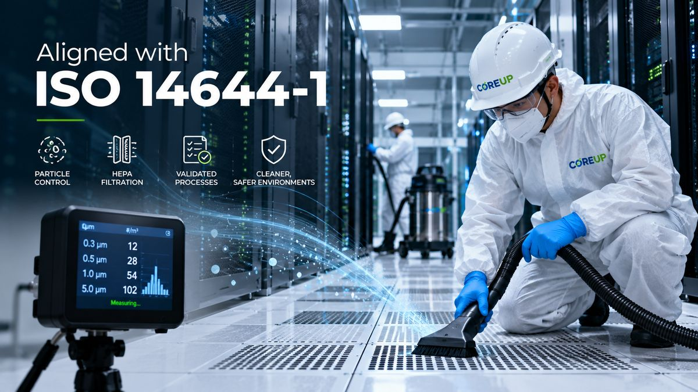

Particle Measurement
Verification with particle counters where included in the agreed scope.
We follow structured cleaning methodologies aligned with ISO 14644-1 for airborne particle cleanliness classification and verification in controlled environments.
Our cleaning methodology is informed by the principles of airborne particle cleanliness classification and verification used in controlled environments.
We apply a structured process that considers facility layout, contamination sources, airflow behaviour, access restrictions, equipment sensitivity and the agreed level of verification. Cleaning execution itself remains task-specific and site-controlled.
Evaluate facility, airflow, contamination risks and access conditions.
Define scope, method, equipment and schedule.
Execute using ESD-aware methods and HEPA-filtered equipment.
Document checks and particle observations where required.

Our cleaning activities are planned, documented and executed with minimum operational impact.
Where required, verification can include visual checks, particle measurements and documented observations.
Verification with particle counters where included in the agreed scope.
Controlled materials and equipment handling around sensitive technical environments.
HEPA-filtered equipment designed to capture fine particulate matter.
Our teams are trained, qualified and certified to work in controlled technical environments and to follow site-specific procedures.
Specialist training, PPE discipline and documented working methods.
We will build the scope around your facility and operational requirements.